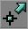
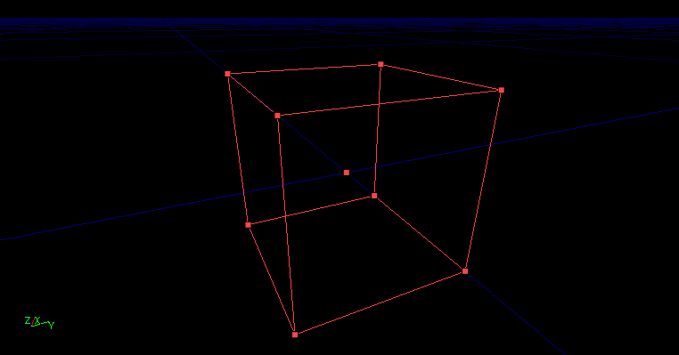
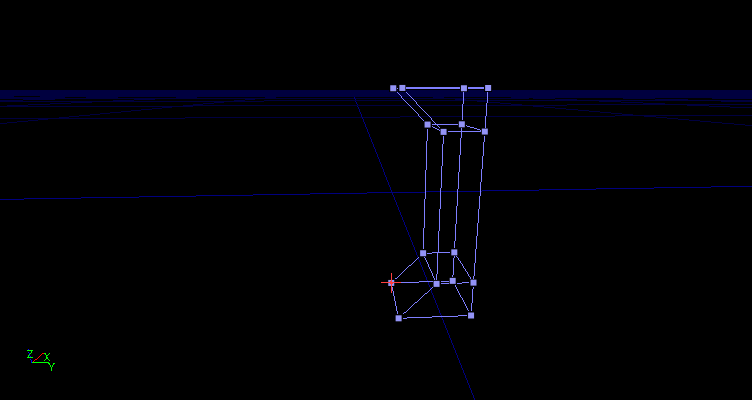

VertexToolTutorial
Note: this tutorial was written by Eliot.
Vertex Tutorial
You should read this tutorial only if you want to make other types of shapes by editing a default brush.
How we do this is with the Vertex Editing tool in UnrealEd you can find this tool left in your big bar "See icon "
Lets Start Learn!
- Step 1 Click the Vertex Editing Tool .
- Step 2 Choose a brush type. I use Cube as an Example but you can choose whatever you want it works with all of them.
- Step 3 Go to TOP View and Zoom in to the brush so we can see the Verticles much better.
- Step 4 Enable the button Show Large Verticles "See icon
![[showverticles5no]](images/showverticles5no.jpeg) " u can find it at any View Window.
" u can find it at any View Window.

- Step 5 Now you see the small Verticles are big now so again much better to see! and to select.
- Step 6 Select one of the Verticles and hold down CTRL. Now move your mouse to the location where you want the Verticle to go while holding Left Mouse button.
- Step 7 Now you are done learning how to use the Awesome Tool.
Now heres my example what i made while creating this tutorial

- Note: If u want more Verticles on your brush then you should read a 2D Editor Tutorial. for example this one 2D Shape Editor Menu
Comments
feel free to clean the page up and fixing wrongspelled words.
Eliot: i hope you all like my short but simple tutorial  .
.
Eliot: aww damnit just noticed theres already another vertex editing tutorial  .
.
Eliot: added this page to Mapping Topics since i could not find any other vertex tut there yet , please reply if im wrong.